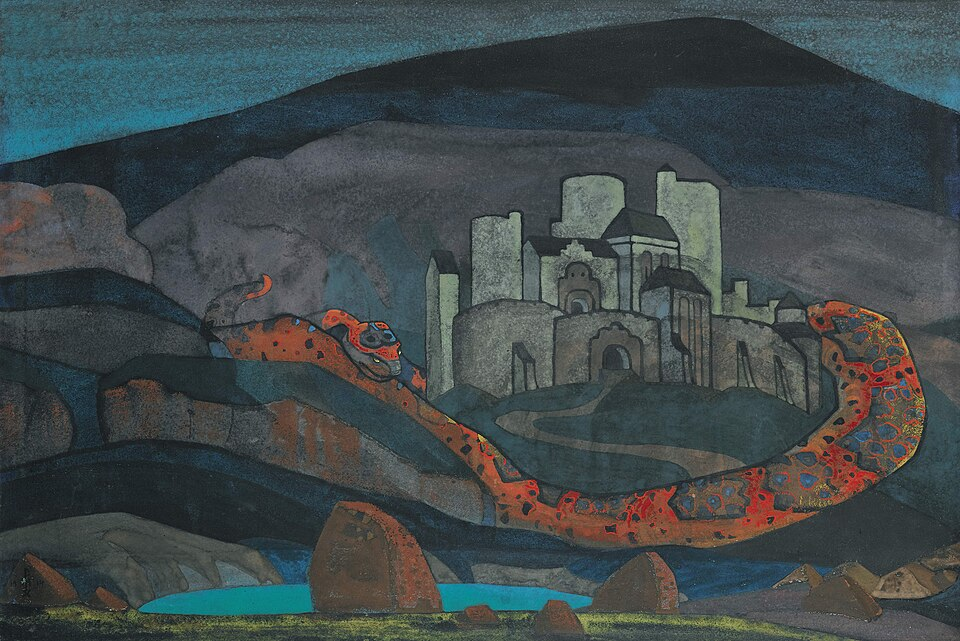
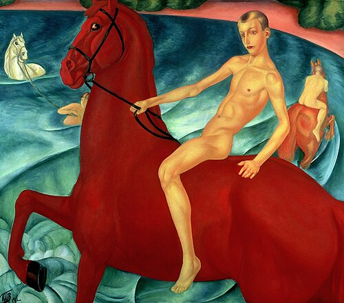
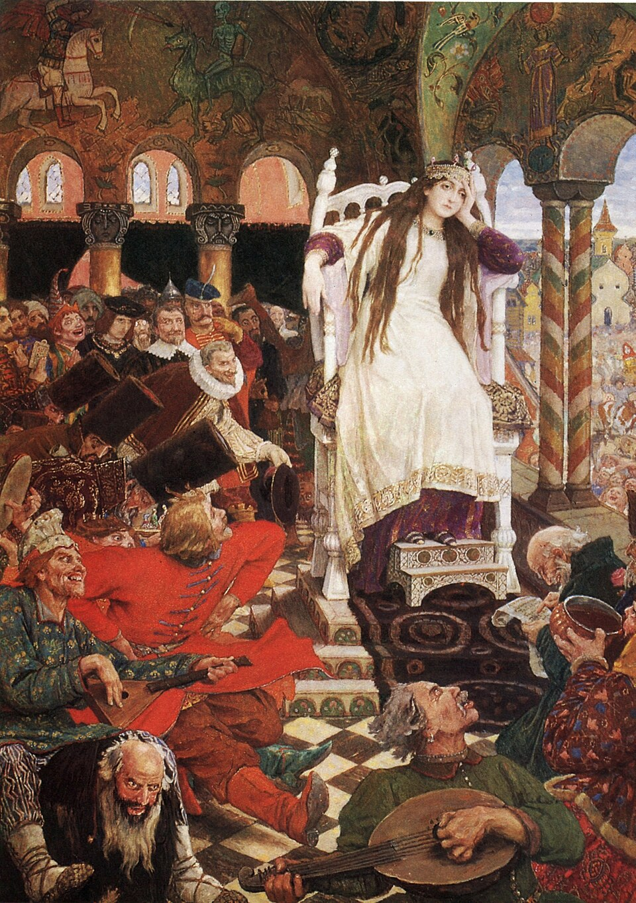
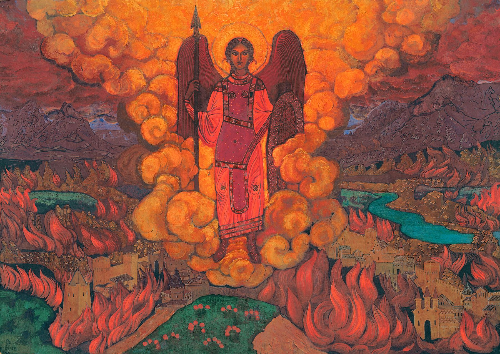
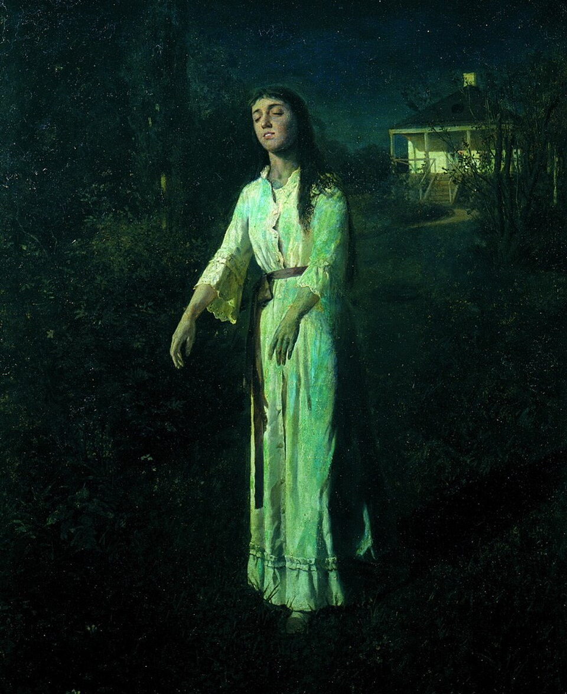

Картина «Град обречённый», созданная Рерихом накануне Первой мировой и революции, пугает до мурашек. Над городом — туча в форме дракона. Древний символ хаоса и разрушения.
Этот город на краю пропасти стал прообразом Российской империи перед её крушением. Картина была написана за три года до 1917 года, будто сам художник предчувствовал, как поднимется ураган истории.

Картина - яркое, образное иносказание, философская притча, к которой художник пришел через трансформацию реальных впечатлений. Увиденная им бытовая зарисовка преобразуется во вневременное действо, отсылающее к иконописному святому Георгию и работам Доменико Гирландайо.
Динамика композиции словно застыла. В то же время она нарушатся насыщенным образом ярко-красного коня, создавая пронзительное несоответствие, как следствие, вызывая тревожность и еле уловимые ощущения грядущих тяжелых времен. Художник намеренно скрывает сюжет, вовлекая всех смотрящих в процесс образного созидания.

В центре композиции - царевна, сидящая на троне. Её поза отражает отрешённую печаль и задумчивость: лицо печально, взгляд устремлён вдаль, одна рука подпирает голову, вторая устало опущена вниз. Она расположена на некотором возвышении относительно остальных персонажей, что подчёркивает её дистанцию и возвышенность духа. Белое одеяние царевны контрастирует с тёмной зелёно-красной цветовой гаммой толпы.
Справа от царевны - веселящаяся толпа: приглашённые женихи, слуги, скоморохи, гусляры. Это подчёркивает контраст между нравственной чистотой и алчностью.
Царевна выступает как символ нравственности и достоинства. Ей противопоставлены алчные женихи, стремящиеся к богатству и власти.Грусть царевны - не прихоть, а осознанный выбор. Она видит истинную сущность женихов и не может смеяться, потому что они не искренние ухажёры.

Еще одно полотно Николая Рериха накануне Первой мировой войны. Сюжет заимствован из Библии, но трактуется в характерном для Рериха стиле. По Библии, Ангел Последний карает человечество за накопленные грехи и проявленную бездуховность, уничтожая старый мир огнём и мечом для того, чтобы полностью обновить его.
Образ ангела, стоящего над разрушенным городом, отсылает к Апокалипсису. В руках огненного ангела — свиток, охраняющий и защищающий истинную культуру. В нём указан список лиц, которые шли путём духовного совершенствования, которые спасутся и перейдут в новую светлую эпоху.

На полотне изображена девушка, которая идёт по пустынной дороге в лунную ночь. Её глаза закрыты, руки слегка вытянуты вперёд, лицо напряжено и лишено эмоций. Героиня находится в состоянии сомнамбулизма (лунатизма) — расстройства сна, при котором человек совершает автоматические действия в неясном сознании.
Художник усилил эффект мрачной магии, подчеркнув, что зритель имеет дело с чем-то неземным. Поза девушки театральна, а выражение лица преувеличено — это сравнимо с героинями романов ужасов. Искусствоведы отмечают сходство образа сомнамбулы Крамского с литературными образами из работ Эдгара Аллана По.
Синеватые оттенки, которые заливают сцену, создают ощущение зыбкости и неопределённости, будто реальность на картине готова распасться. Лунный свет, заливающий дорогу и пейзаж, усиливает мистическое впечатление.